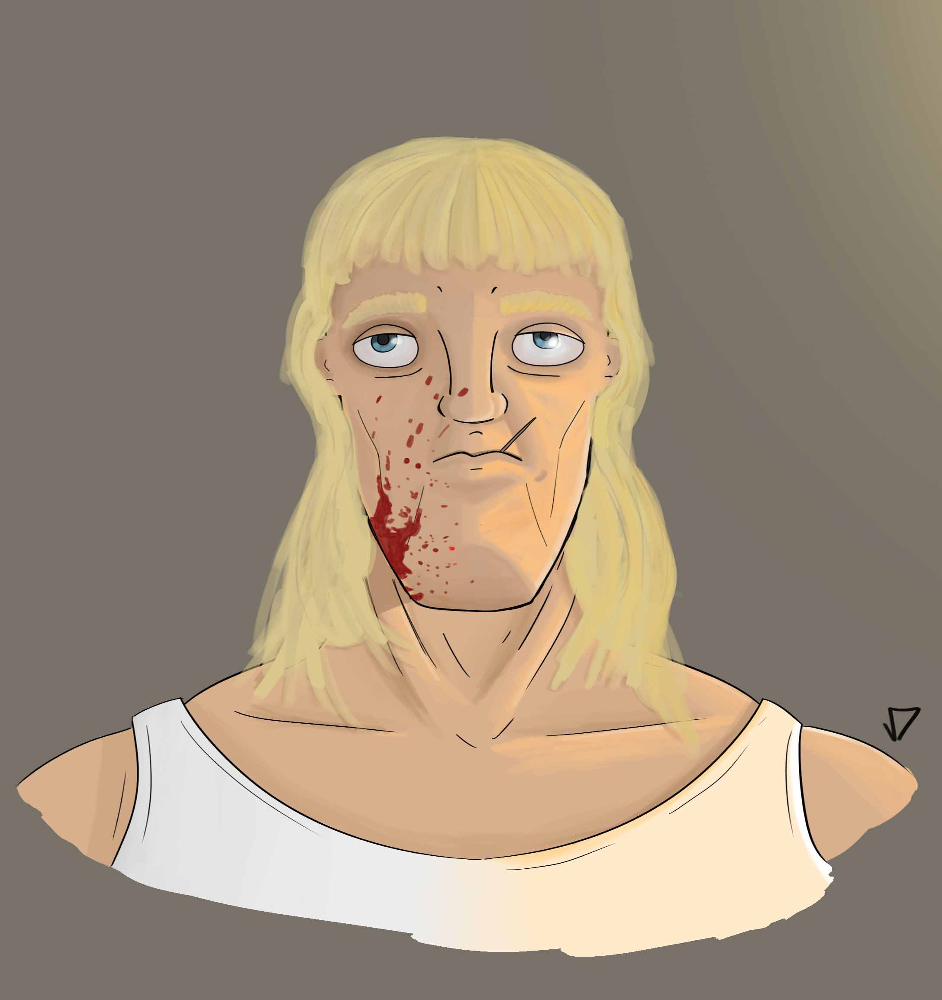

Beto Pera.

O exercício de imaginação começou de um esboço bem simples onde fui testando as cores e características até chegar nesse resultado, que é mais ou menos um cara brigão dos anos 80.
Tecnica utilizada: Pintura digital
A lata

O exercício de imaginação abstrata é um lata amassada em frente ao mar, significando que tudo que se joga la, em algum momento acaba voltando para a terra.
Tecnica utilizada: Fotográfia